insert优化
一次需要向表中插入多条数据
如果我们需要一次性往数据库表中插入多条记录，可以从以下三个方面进行优化。
insert into tb_test values(1,'tom');
insert into tb_test values(2,'cat');
insert into tb_test values(3,'jerry');
.....
优化要点一：批量插入数据
-- 一次性所插入的数据不建议超过1000条，500--1000条是比较合适的
Insert into tb_test values(1,'Tom'),(2,'1 Cat'),(3,'Jerry');
优化要点二：手动控制事务
start transaction;
insert into tb_test values(1,'Tom'),(2,'Cat'),(3,'Jerry');
insert into tb_test values(4,'Tom'),(5,'Cat'),(6,'Jerry');
insert into tb_test values(7,'Tom'),(8,'Cat'),(9,'Jerry');
commit;
优化要点三：主键顺序插入，性能要高于乱序插入。
主键乱序插入 : 8 1 9 21 88 2 4 15 89 5 7 3
主键顺序插入 : 1 2 3 4 5 7 8 9 15 21 88 89
大批量插入数据
如果一次性需要插入大批量数据(比如: 几百万的记录)，使用insert语句插入性能较低，此时可以使用MySQL数据库提供的load指令进行插入。操作如下：
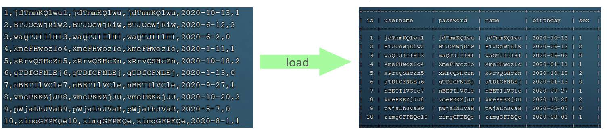可以执行如下指令，将数据脚本文件中的数据加载到表结构中：
-- 客户端连接服务端时，加上参数 -–local-infile
mysql --local-infile -u root -p
-- 设置全局参数local_infile为1，开启从本地加载文件导入数据的开关
set global local_infile = 1;
-- 查询该配置是否开启
select @@local_infile;
-- 执行load指令将准备好的数据，加载到表结构中
-- fields terminated by ',' 表示每一个属性值是通过“,”分割的
-- lines terminated by '\n' 表示每一行使用 '\n'（换行）分割
load data local infile '文件路径' into table '表名' fields terminated by ',' lines terminated by '\n' ;
演示
创建一张表：
CREATE TABLE `tb_user2` (
`id` INT(11) NOT NULL AUTO_INCREMENT,
`username` VARCHAR(50) NOT NULL,
`password` VARCHAR(50) NOT NULL,
`name` VARCHAR(20) NOT NULL,
`birthday` DATE DEFAULT NULL,
`sex` CHAR(1) DEFAULT NULL,
PRIMARY KEY (`id`),
UNIQUE KEY `unique_user_username` (`username`)
) ENGINE=INNODB DEFAULT CHARSET=utf8 ;
使用finalshell把脚本上传到服务器（虚拟机）上
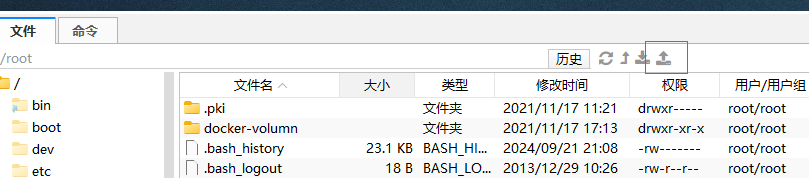放在根目录下就可以了
[root@centos01 ~]# ll
总用量 56328
-rw-r--r-- 1 root root 18623 11月 17 2021 03.jpg
-rw-------. 1 root root 1246 9月 15 2021 anaconda-ks.cfg
drwxr-xr-x 3 root root 18 11月 17 2021 docker-volumn
-rw-r--r-- 1 root root 45 11月 18 2021 index.html
-rw-r--r-- 1 root root 57650380 9月 23 00:02 load_user_100w_sort.sql
load_user_100w_sort.sql里面文件内容的格式如下：
[root@centos01 ~]# head load_user_100w_sort.sql
1,jdTmmKQlwu1,jdTmmKQlwu,jdTmmKQlwu,2020-10-13,1
2,BTJOeWjRiw2,BTJOeWjRiw,BTJOeWjRiw,2020-6-12,2
3,waQTJIIlHI3,waQTJIIlHI,waQTJIIlHI,2020-6-2,0
4,XmeFHwozIo4,XmeFHwozIo,XmeFHwozIo,2020-1-11,1
5,xRrvQSHcZn5,xRrvQSHcZn,xRrvQSHcZn,2020-10-18,2
6,gTDfGFNLEj6,gTDfGFNLEj,gTDfGFNLEj,2020-1-13,0
7,nBETIlVCle7,nBETIlVCle,nBETIlVCle,2020-9-27,1
8,vmePKKZjJU8,vmePKKZjJU,vmePKKZjJU,2020-10-20,2
9,pWjaLhJVaB9,pWjaLhJVaB,pWjaLhJVaB,2020-5-7,0
10,zimgGFPEQe10,zimgGFPEQe,zimgGFPEQe,2020-8-1,1
执行命令，只需要8秒就可以导入100w条数据
mysql> load data local infile '/root/load_user_100w_sort.sql' into table tb_user2 fields terminated by ',' lines terminated by '\n';
Query OK, 1000000 rows affected (8.09 sec)
Records: 1000000 Deleted: 0 Skipped: 0 Warnings: 0
主键优化
数据组织方式
在InnoDB存储引擎中，表数据都是根据主键顺序组织存放的，这种存储方式的表称为索引组织表 (index organized table IOT)。
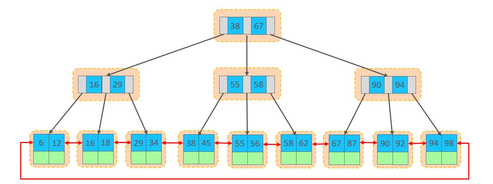在InnoDB引擎中，数据行是记录在逻辑结构 page 页中的，而每一个页的大小是固定的，默认16K。那也就意味着， 一个页中所存储的行也是有限的，如果插入的数据行row在该页存储不小，将会存储到下一个页中，页与页之间会通过指针连接。
页分裂
主键顺序插入效果
从磁盘中申请页， 主键顺序插入
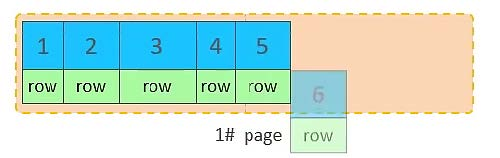第一个页没有满，继续往第一页插入
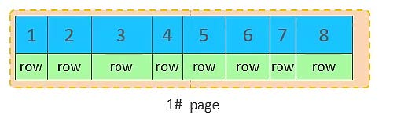当第一个也写满之后，再写入第二个页，页与页之间会通过指针连接
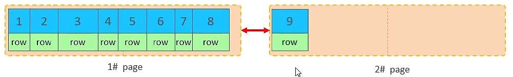当第二页写满了，再往第三页写入
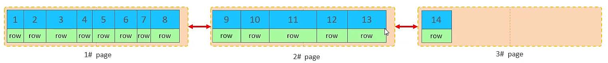主键乱序插入效果
加入1#,2#页都已经写满了，存放了如图所示的数据
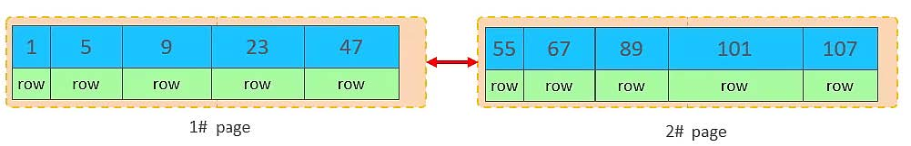此时再插入id为50的记录，我们来看看会发生什么现象
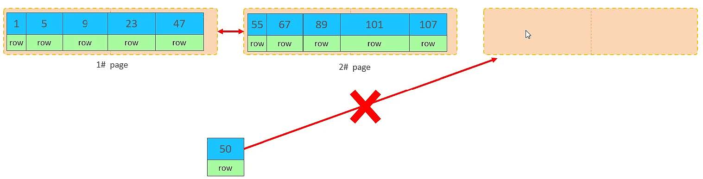这个时候MySQL不会开启一个新页，因为，索引结构的叶子节点是有顺序的。按照顺序，应该存储在47之后。
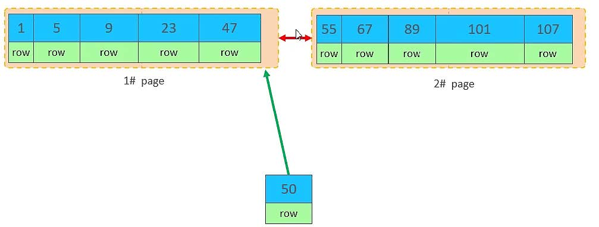但是47所在的1#页，已经写满了，存储不了50对应的数据了。 那么此时会开辟一个新的页 3#。
但是并不会直接将50存入3#页，而是会将1#页后一半的数据，移动到3#页，然后在3#页，插入50。
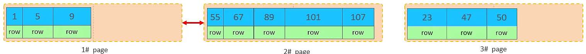移动数据，并插入id为50的数据之后，那么此时，这三个页之间的数据顺序是有问题的。 1#的下一个页，应该是3#， 3#的下一个页是2#。 所以，此时，需要重新设置链表指针。
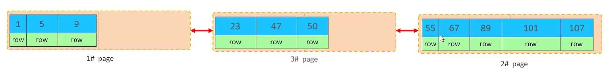上述的这种现象，称之为 “页分裂”，是比较耗费性能的操作。
页合并
目前表中已有数据的索引结构(叶子节点)如下：
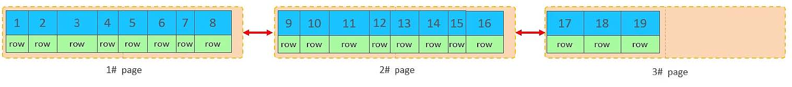当我们对已有数据进行删除时，具体的效果如下:
当删除一行记录时，实际上记录并没有被物理删除，只是记录被标记（flaged）为删除并且它的空间变得允许被其他记录声明使用。
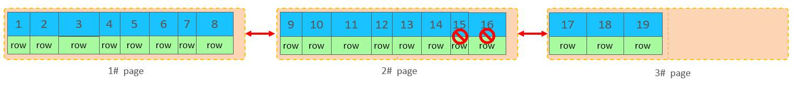当我们继续删除2#的数据记录
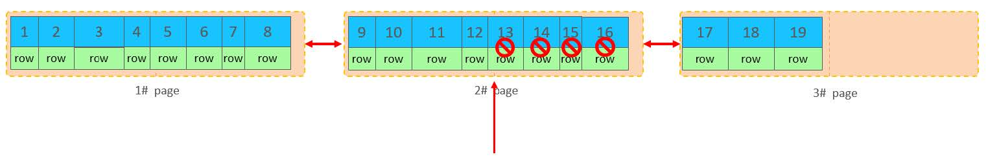当页中删除的记录达到 MERGE_THRESHOLD（默认为页的50%），InnoDB会开始寻找最靠近的页（前或后）看看是否可以将两个页合并以优化空间使用。
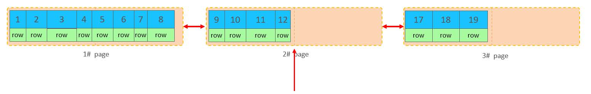 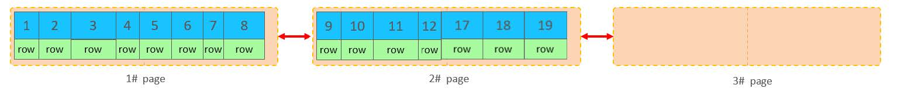删除数据，并将页合并之后，再次插入新的数据21，则直接插入3#页
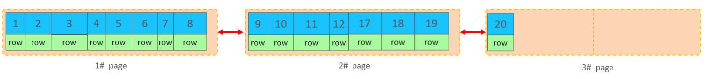这个里面所发生的合并页的这个现象，就称之为 “页合并”。
MERGE_THRESHOLD：合并页的阈值，可以自己设置，在创建表或者创建索引时指定。
索引设计原则
满足业务需求的情况下，尽量降低主键的长度。
插入数据时，尽量选择顺序插入，选择使用AUTO_INCREMENT自增主键。
尽量不要使用UUID做主键或者是其他自然主键，如身份证号。
分布式系统：
- UUID：非常适合分布式系统，因为它能够保证全局唯一性，无需额外的协调机制。
- 自增ID：在分布式系统中，如果直接使用自增ID作为主键，可能会遇到ID冲突的问题，需要额外的服务（如ID生成器服务）来确保ID的唯一性。
文心一言的建议：
- 如果你的应用是分布式的，或者你需要全局唯一的主键，那么UUID可能是一个更好的选择。
- 如果你的应用是单体应用，或者对性能有较高要求，特别是在高并发的写入和范围查询场景下，自增ID可能更适合。
- 在一些情况下，也可以考虑将UUID和自增ID结合使用，例如使用UUID作为业务ID，同时维护一个自增ID作为数据库主键，以满足不同的需求
业务操作时，避免对主键的修改。
order by优化
两种排序方式
Using filesort : 通过表的索引或全表扫描，读取满足条件的数据行，然后在排序缓冲区sort buffer中完成排序操作，所有不是通过索引直接返回排序结果的排序都叫 FileSort 排序。
Using index : 通过有序索引顺序扫描直接返回有序数据，这种情况即为 using index，不需要额外排序，操作效率高。
对于以上的两种排序方式，Using index的性能高，而Using filesort的性能低，我们在优化排序操作时，尽量要优化为 Using index。
测试
准备数据
把之前测试时，为tb_user表所建立的部分索引直接删除掉，保留如下：
idx_user_pro_age_sta：`profession`, `age`, `status`
idx_email_5：`email`(5)
执行排序SQL
mysql> explain select id,age,phone from tb_user order by age\G;
*************************** 1. row ***************************
id: 1
select_type: SIMPLE
table: tb_user
partitions: NULL
type: ALL
possible_keys: NULL
key: NULL
key_len: NULL
ref: NULL
rows: 24
filtered: 100.00
Extra: Using filesort
1 row in set, 1 warning (0.00 sec)
mysql> explain select id,age,phone from tb_user order by age, phone\G;
*************************** 1. row ***************************
id: 1
select_type: SIMPLE
table: tb_user
partitions: NULL
type: ALL
possible_keys: NULL
key: NULL
key_len: NULL
ref: NULL
rows: 24
filtered: 100.00
Extra: Using filesort
1 row in set, 1 warning (0.00 sec)
由于 age, phone 都没有索引，所以此时再排序时，出现Using filesort， 排序性能较低。
创建索引
create index idx_user_age_phone_aa on tb_user(age,phone);
创建索引后，根据age, phone进行升序排序
mysql> explain select id,age,phone from tb_user order by age\G;
*************************** 1. row ***************************
id: 1
select_type: SIMPLE
table: tb_user
partitions: NULL
type: index
possible_keys: NULL
key: idx_user_age_phone_aa
key_len: 37
ref: NULL
rows: 24
filtered: 100.00
Extra: Using index
1 row in set, 1 warning (0.00 sec)
mysql> explain select id,age,phone from tb_user order by age, phone\G;
*************************** 1. row ***************************
id: 1
select_type: SIMPLE
table: tb_user
partitions: NULL
type: index
possible_keys: NULL
key: idx_user_age_phone_aa
key_len: 37
ref: NULL
rows: 24
filtered: 100.00
Extra: Using index
1 row in set, 1 warning (0.00 sec)
建立索引之后，再次进行排序查询，就由原来的Using filesort， 变为了 Using index，性能就是比较高的了。
创建索引后，根据age, phone进行降序排序
mysql> explain select id,age,phone from tb_user order by age desc , phone desc\G ;
*************************** 1. row ***************************
id: 1
select_type: SIMPLE
table: tb_user
partitions: NULL
type: index
possible_keys: NULL
key: idx_user_age_phone_aa
key_len: 37
ref: NULL
rows: 24
filtered: 100.00
Extra: Using index, Backward index scan
1 row in set, 1 warning (0.00 sec)
也出现 Using index， 但是此时Extra中出现了 Backward index scan，这个代表反向扫描索引，因为在MySQL中我们创建的索引，默认索引的叶子节点是从小到大排序的，而此时我们查询排序时，是从大到小，所以，在扫描时，就是反向扫描，就会出现 Backward index scan。
在MySQL8版本中，支持降序索引，我们也可以创建降序索引
根据phone，age进行升序排序，phone在前，age在后。
mysql> explain select id,age,phone from tb_user order by phone , age\G;
*************************** 1. row ***************************
id: 1
select_type: SIMPLE
table: tb_user
partitions: NULL
type: index
possible_keys: NULL
key: idx_user_age_phone_aa
key_len: 37
ref: NULL
rows: 24
filtered: 100.00
Extra: Using index; Using filesort
1 row in set, 1 warning (0.00 sec)
排序时,也需要满足最左前缀法则,否则也会出现 filesort。因为在创建索引的时候， age是第一个字段，phone是第二个字段，所以排序时，也就该按照这个顺序来，否则就会出现 Using filesort。这个和where过滤不一样，我想是因为order by phone , age 是有顺序的：先根据phone排序，然后再根据age排序
根据age, phone进行降序一个升序，一个降序
mysql> explain select id,age,phone from tb_user order by age asc , phone desc\G;
*************************** 1. row ***************************
id: 1
select_type: SIMPLE
table: tb_user
partitions: NULL
type: index
possible_keys: NULL
key: idx_user_age_phone_aa
key_len: 37
ref: NULL
rows: 24
filtered: 100.00
Extra: Using index; Using filesort
1 row in set, 1 warning (0.00 sec)
因为创建索引时，如果未指定顺序，默认都是按照升序排序的，而查询时，一个升序，一个降序，此时就会出现Using filesort。
创建联合索引(age 升序排序，phone 倒序排序)
为了解决上述的问题，我们可以创建一个索引，这个联合索引中 age 升序排序，phone 倒序排序。
create index idx_user_age_phone_ad on tb_user(age asc ,phone desc);
然后再次执行如下SQL
mysql> explain select id,age,phone from tb_user order by age asc , phone desc\G;
*************************** 1. row ***************************
id: 1
select_type: SIMPLE
table: tb_user
partitions: NULL
type: index
possible_keys: NULL
key: idx_user_age_phone_ad
key_len: 48
ref: NULL
rows: 24
filtered: 100.00
Extra: Using index
1 row in set, 1 warning (0.00 sec)
升序/降序联合索引结构图示:
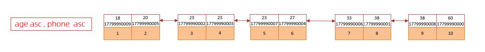 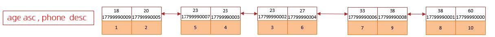order by优化原则
根据排序字段建立合适的索引，多字段排序时，也遵循最左前缀法则。
尽量使用覆盖索引。
多字段排序, 一个升序一个降序，此时需要注意联合索引在创建时的规则（ASC/DESC）。
如果不可避免的出现filesort，大数据量排序时，**可以适当增大排序缓冲区大小sort_buffer_size(默认256k)**。
- 临时修改（仅对当前会话有效）
SET SESSION sort_buffer_size = 256*1024; -- 设置为256KB
运行时动态修改（对于支持动态变量的MySQL版本）
SET GLOBAL sort_buffer_size = 8*1024*1024; -- 设置为8MB全局修改（对所有新会话有效）
[mysqld] sort_buffer_size = 8M
group by优化
把其他索引都删掉，只留下下面的索引
idx_user_pro_age_sta： `profession`, `age`, `status`
接着，做如下实验
mysql> explain select profession , count(*) from tb_user group by profession\G;
*************************** 1. row ***************************
id: 1
select_type: SIMPLE
table: tb_user
partitions: NULL
type: index
possible_keys: idx_user_pro_age_sta
key: idx_user_pro_age_sta
key_len: 54
ref: NULL
rows: 24
filtered: 100.00
Extra: Using index
1 row in set, 1 warning (0.01 sec)
mysql> explain select profession , count(*) from tb_user group by profession,age\G;
*************************** 1. row ***************************
id: 1
select_type: SIMPLE
table: tb_user
partitions: NULL
type: index
possible_keys: idx_user_pro_age_sta
key: idx_user_pro_age_sta
key_len: 54
ref: NULL
rows: 24
filtered: 100.00
Extra: Using index
1 row in set, 1 warning (0.00 sec)
mysql> explain select age, count(*) from tb_user group by age\G;
*************************** 1. row ***************************
id: 1
select_type: SIMPLE
table: tb_user
partitions: NULL
type: index
possible_keys: idx_user_pro_age_sta
key: idx_user_pro_age_sta
key_len: 54
ref: NULL
rows: 24
filtered: 100.00
Extra: Using index; Using temporary
1 row in set, 1 warning (0.00 sec)
我们发现，如果仅仅根据age分组，就会出现 Using temporary ；
而如果是 根据 profession,age两个字段同时分组，则不会出现 Using temporary。
原因是因为对于分组操作，在联合索引中，也是符合最左前缀法则的。
优化原则
在分组操作时，可以通过索引来提高效率。
分组操作时，索引的使用也是满足最左前缀法则的。
limit 优化
在数据量比较大时，如果进行limit分页查询，在查询时，越往后，分页查询效率越低。
为了便于测试，避免 MySQL 内的缓存机制干扰分析结果，我们在分析 SQL 语句时取消 SQL 语句的缓存功能。
使用 SQL_NO_CACHE 关键字
mysql> select SQL_NO_CACHE * from tb_sku limit 1000,10;
10 rows in set, 1 warning (0.00 sec)
mysql> select SQL_NO_CACHE * from tb_sku limit 1000000,10;
10 rows in set, 1 warning (1.24 sec)
mysql> select SQL_NO_CACHE * from tb_sku limit 5000000,10;
10 rows in set, 1 warning (5.97 sec)
mysql> select SQL_NO_CACHE * from tb_sku limit 9000000,10;
10 rows in set, 1 warning (10.89 sec)
通过测试我们会看到，越往后，分页查询效率越低，这就是分页查询的问题所在。因为，当在进行分页查询时，如果执行 limit 2000000,10 ，此时需要MySQL排序前2000010 记录，仅仅返回 2000000 - 2000010 的记录，其他记录丢弃，查询排序的代价非常大 。
优化思路: 一般分页查询时，通过创建 覆盖索引 能够比较好地提高性能，可以通过覆盖索引加子查询形式进行优化。
select SQL_NO_CACHE * from tb_sku t , (select id from tb_sku order by id limit 9000000,10) a where t.id = a.id;
10 rows in set, 1 warning (6.30 sec)
count优化
count() 是一个聚合函数，对于返回的结果集，一行行地判断，如果 count 函数的参数不是NULL，累计值就加 1，否则不加，最后返回累计值。
| count用法 | 含义 |
|---|---|
| count(主键) | InnoDB 引擎会遍历整张表，把每一行的 主键id 值都取出来，返回给服务层。服务层拿到主键后，直接按行进行累加(主键不可能为null) |
| count(字段) | 没有not null 约束 : InnoDB 引擎会遍历整张表把每一行的字段值都取出来，返回给服务层，服务层判断是否为null，不为null，计数累加。 有not null 约束：InnoDB 引擎会遍历整张表把每一行的字段值都取出来，返回给服务层，直接按行进行累加。 |
| count(数字) | InnoDB 引擎遍历整张表，但不取值。服务层对于返回的每一行，放一个数字“1”进去，直接按行进行累加。 |
| count(*) | InnoDB引擎并不会把全部字段取出来，而是专门做了优化，不取值，服务层直接按行进行累加。 |
按照效率排序的话，count(字段) < count(主键 id) < count(1) ≈count(*)，所以尽量使用 count(*)。
update优化
如果根据没有索引的字段去修改某个值，那么行锁会变成表所
正常情况
窗口A：修改id=1的用户名字
mysql> begin;
Query OK, 0 rows affected (0.00 sec)
mysql> update tb_user set name = 'a' where id =1;
Query OK, 1 row affected (0.00 sec)
Rows matched: 1 Changed: 1 Warnings: 0
mysql> commit;
Query OK, 0 rows affected (0.00 sec)
窗口B：修改id=2的用户的名字
mysql> begin;
Query OK, 0 rows affected (0.00 sec)
mysql> update tb_user set name = 'b' where id =2;
Query OK, 1 row affected (0.00 sec)
Rows matched: 1 Changed: 1 Warnings: 0
mysql> commit;
Query OK, 0 rows affected (0.01 sec)
两个都修改成功
锁表的情况
窗口A：修改name=a的用户名字，然后事务没提交
mysql> begin;
Query OK, 0 rows affected (0.00 sec)
mysql> update tb_user set name = 'aa' where name ='a';
Query OK, 1 row affected (0.00 sec)
Rows matched: 1 Changed: 1 Warnings: 0
窗口B：修改id=2的用户的名字
mysql> begin;
Query OK, 0 rows affected (0.00 sec)
mysql> update tb_user set name = 'bb' where id =2;
ERROR 1205 (HY000): Lock wait timeout exceeded; try restarting transaction
这个时候tb_user 锁表了
给name创建索引
创建索引：
create index idx_user_name on tb_user(name);
窗口A：修改name=a的用户名字，然后事务没提交
mysql> begin;
Query OK, 0 rows affected (0.00 sec)
mysql> update tb_user set name = 'aa' where name ='a';
Query OK, 1 row affected (0.00 sec)
Rows matched: 1 Changed: 1 Warnings: 0
窗口B：修改id=2的用户的名字，提交。成功修改
mysql> begin;
Query OK, 0 rows affected (0.00 sec)
mysql> update tb_user set name = 'bb' where id =2;
Query OK, 1 row affected (0.00 sec)
Rows matched: 1 Changed: 1 Warnings: 0
mysql> commit;
Query OK, 0 rows affected (0.00 sec)
InnoDB的行锁是针对索引加的锁，不是针对记录加的锁 ,并且该索引不能失效，否则会从行锁升级为表锁 。
转载请注明来源，欢迎对文章中的引用来源进行考证，欢迎指出任何有错误或不够清晰的表达。可以在下面评论区评论，也可以邮件至 1909773034@qq.com